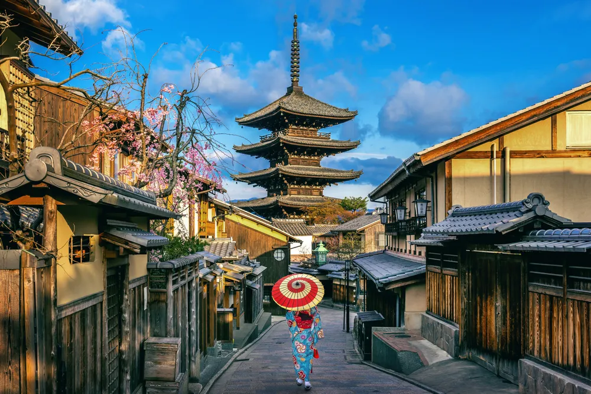
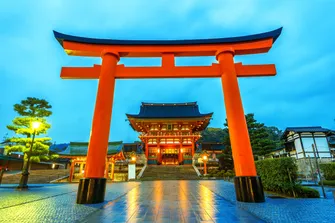
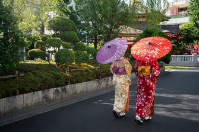
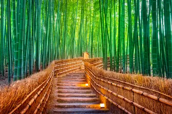

Tranquil·litat i tradició
Kyoto, l’antiga capital del Japó, és un dels llocs més bells del món per gaudir de la cultura japonesa tradicional.
Entre temples, jardins zen i cases de te, Kyoto ofereix una experiència espiritual única per a qualsevol viatger.
La primavera, amb la floració dels cirerers, converteix la ciutat en un mar de color rosa i blanc.


